Press kit/Free to use
Writing about FreshBit?
Descriptions, facts, logos, the app icon, colours and screens. Everything here is free to use in articles and reviews. Questions: hello@dotxline.com.
Describe it
One line
FreshBit is an iPhone app with confirmed news for designers and developers.
Short
FreshBit collects the day’s news in product design, UX/UI, AI development and software, web and app development. It checks 51 trusted sources every 30 minutes, scores each story out of 100 for credibility, and only marks a story Confirmed once trusted sources back it up.
Long
FreshBit is a news app for iPhone, with iPad and Mac support, for people who design and build software. It reads 51 trusted sources: 30 official company blogs, changelogs and release notes, and 21 press and community sources.
Articles about the same event are grouped together, and each story gets a credibility score out of 100 based on who published it, whether an official source confirms it, how many independent outlets report it, and whether they agree. Stories scoring 75 or more are marked Confirmed. Rumours and leaks are never marked Confirmed, and stories from community sites alone are never shown.
Every headline, summary and brief is written by FreshBit in its own words, with a link to the original. The app includes a Today feed with topic filters, a story screen with the facts and the full credibility breakdown, Explore, saved stories that work offline, capped alerts, a daily morning brief and Home Screen and Lock Screen widgets. FreshBit is free, made by dotXline LTD, and the iPhone app is in testing through TestFlight.
Write it as FreshBit, one word with a capital F and a capital B.
Facts
| Name | FreshBit |
| Maker | dotXline LTD, Cardiff, United Kingdom |
| Designed and built by | Nagules Gobi, product designer, with AI-assisted development |
| Platforms | iPhone, with iPad and Mac (Apple silicon) support |
| Status | iPhone in testing on TestFlight. Not on the App Store yet. |
| Widgets | Home Screen (small, medium, large) and Lock Screen |
| Mac | Download from this site, macOS 26 or later on Apple silicon |
| Price | Free. No payments, subscriptions or adverts |
| Topics | Product design, UX/UI design, AI development, software, web and apps |
| Sources | 51: 30 official, 18 established outlets, 3 community sites |
| Updates | Every 30 minutes |
| Built with | Expo, React Native, native SwiftUI components, Supabase |
| Contact | hello@dotxline.com |
Logos and icon
Use the mark on its own at small sizes. Keep clear space around it of at least a quarter of its width. Don’t recolour the lime, stretch the mark or add effects.


Screens
Rendered from FreshBit’s own screens, with stories in FreshBit’s own words. Free to use for editorial coverage.
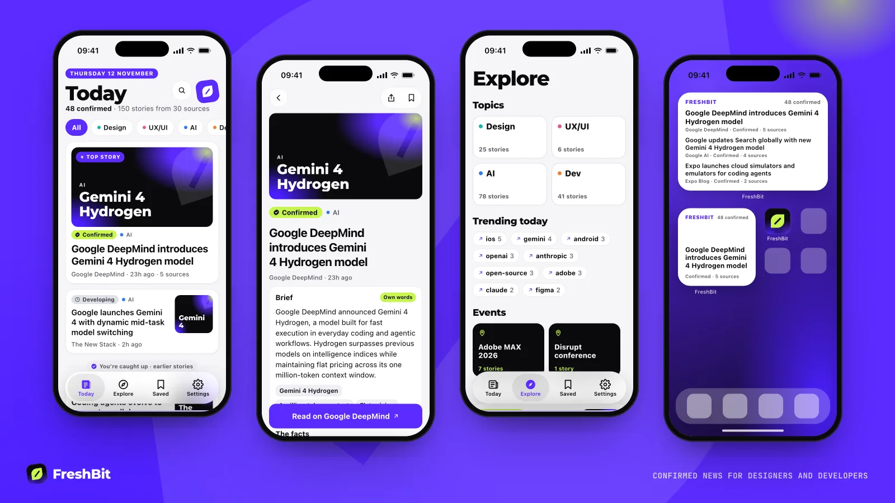

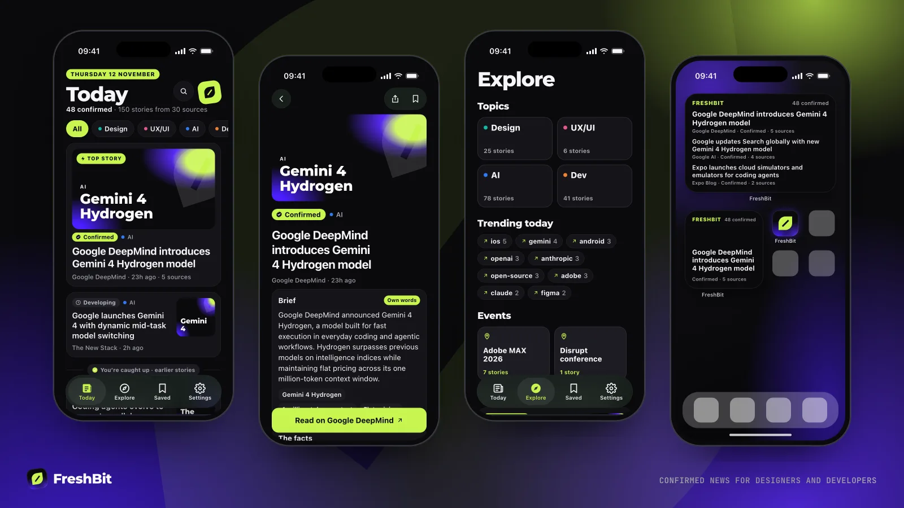

Single screens
iPhone frame on a transparent background, 1140 × 2280 PNG.
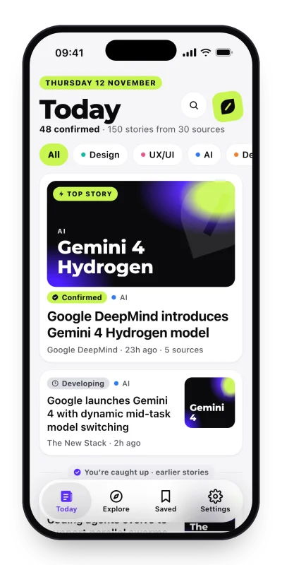
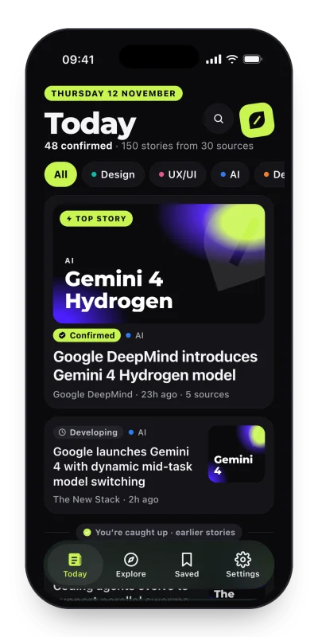


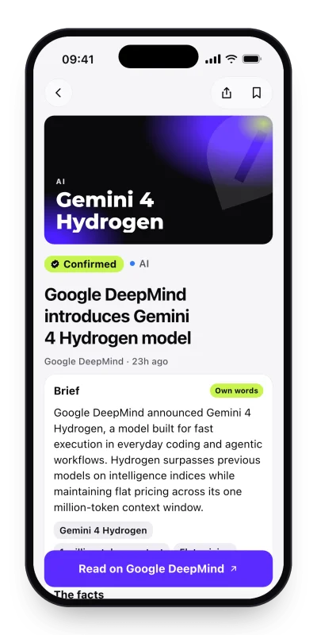
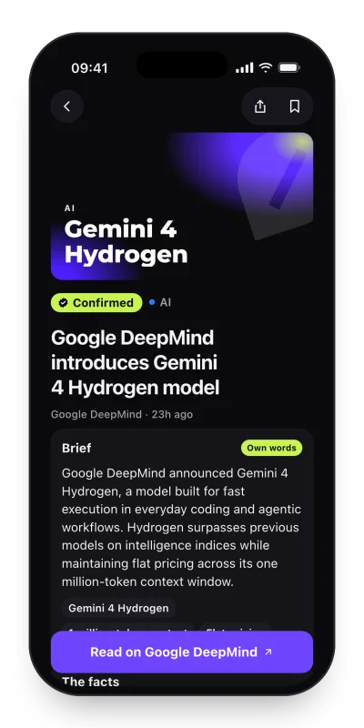


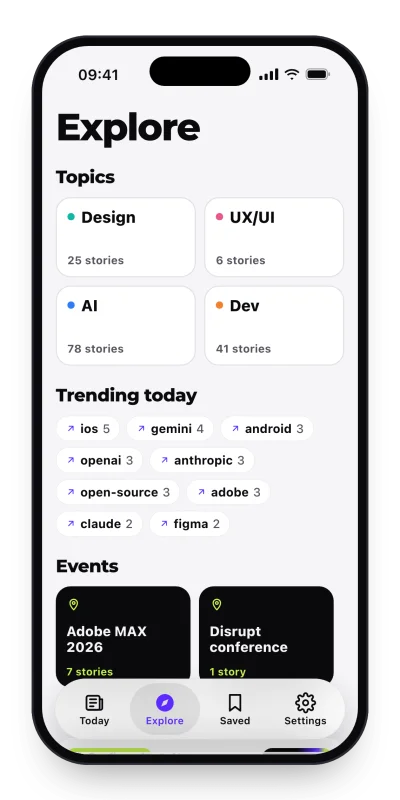
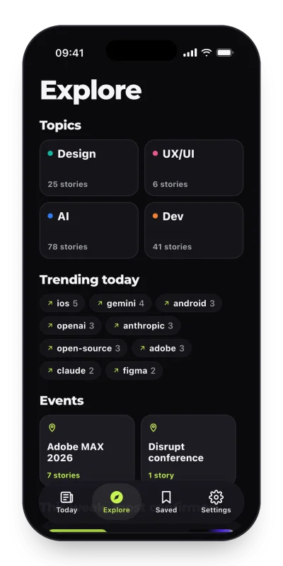


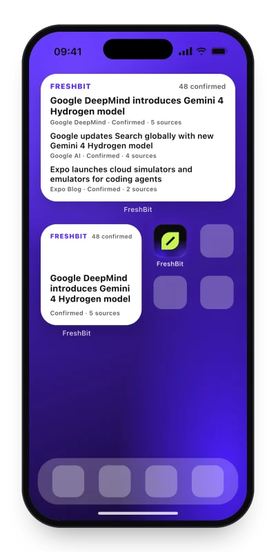
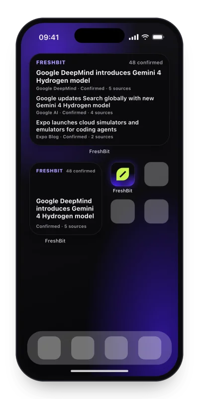


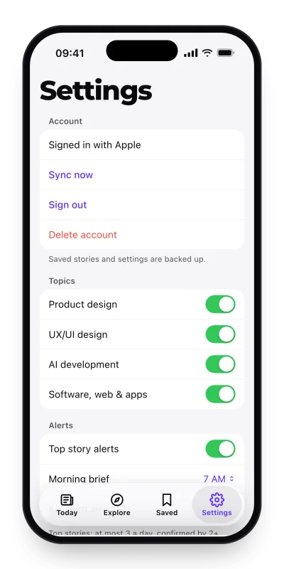
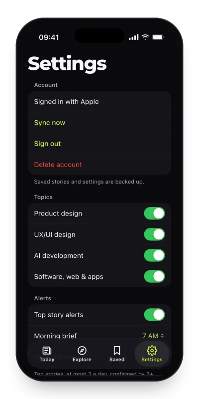


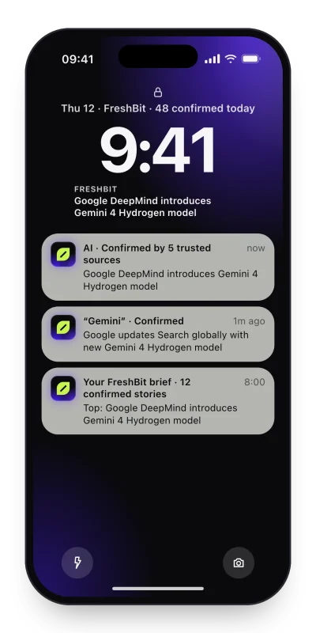